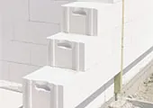
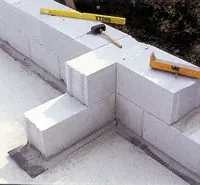
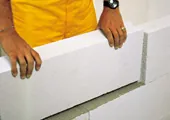
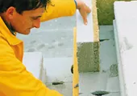
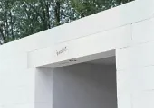
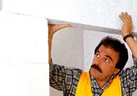
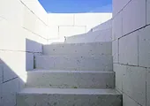

Univerzálny a kompletný stavebný systém
YTONG je vhodným stavebným materiálom od pivnice až po strechu - pre novostavby a rekonštrukcie.

YTONG je vhodným stavebným materiálom od pivnice až po strechu - pre novostavby a rekonštrukcie.
Jednoduché spracovanie skracuje dobu výstavby, šetrí peniaze a zvyšuje kvalitu stavby.
Váš dom je optimálne izolovaný bez prídavnej izolácie. Šetrí to energiu, chráni životné prostredie a vytvára pohodu.
Čím stabilnejšie je dom postavený, tým dlhšie si uchováva svoju hodnotu. Rovnorodá štruktúra mu dáva vo všetkých smeroch rovnako vynikajúce vlastnosti. Vysoká pevnosť v súčinnosti s nízkou hmotnosťou zabezpečuje stavbám z pórobetónu YTONG vysokú bezpečnosť aj pri zemetrasení.
Pórobetón YTONG zabezpečuje vyvážený pomer medzi teplotou a vlhkosťou vzduchu, čím je postarané o zdravú vnútornú klímu.
Pórobetón YTONG chráni už od svojej výroby, až po možnosť bezzvyškového opätovného využitia, vzácne prírodné zdroje a životné prostredie.
Hluk dopravy z ulice a hudba od susedov je účinne odtienená, čo je predpokladom pre nerušené a pokojné bývanie.
Kvalitný a bezplatný servis je neoddeliteľnou súčasťou kompletného systému.
Pórobetón sa vyrába výlučne z minerálnych surovín a preto je nehorľavý. Ako mimoriadne dobrý izolant sa používa na výstavbu protipožiarnych stien.
Prísna kontrola kvality pri výrobe produktov značky YTONG trvale zabezpečuje ich stabilnú vysokú kvalitu.
SORTIMENT VÝROBKOV

Nižšia objemová hmotnosť, rovnaká pevnosť a ešte lepšia tepelná izolácia. To je stručná charakteristika kľúčovej novinky v sortimente pórobetónového murovacieho systému YTONG.
Tepelno izolačné tvárnica YTONG LAMBDA je ideálne riešenie pre moderné stavby bez zateplenia. Bezkonkurenčné hodnoty súčiniteľa tepelnej vodivosti λ=0,087 W/m.K.






Chceš cenu na konkrétne množstvo? Zavolaj alebo napíš, cenovú ponuku spravíme zadarmo.
Spočítame spotrebu, pripravíme ponuku a dohodneme dopravu na stavbu. Zvyčajne do niekoľkých dní.